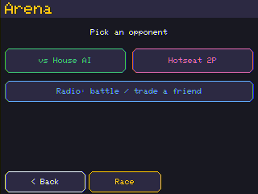
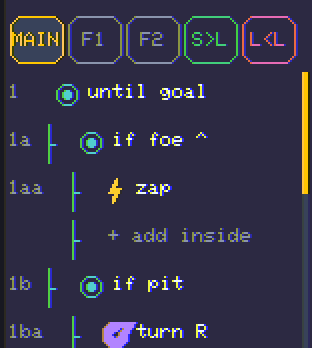
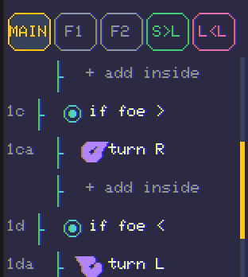
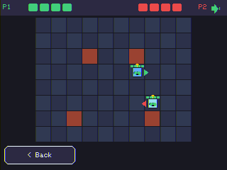
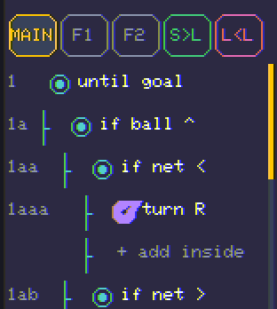
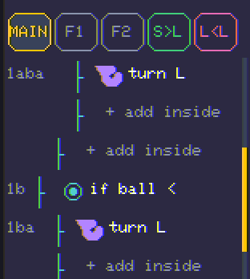
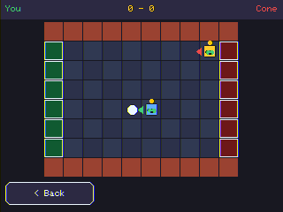

Compete
Hand-code a fighter and a striker for the Arena — and feel where rules start to strain.
Today you will
Enter the Arena
- 🤖 Hand-code a battle bot (it wins!).
- ⚽ Hand-code a soccer bot (it… struggles).
- 💡 Discover which jobs need AI.

New senses
The robot can feel more now
foe ^ foe < foe > foe near — the rival
ball ^ ball < ball > — the ball (soccer)
net < net > — the goal you shoot at (soccer)
Join two senses with & (and) or | (or).
Battle (Sumo)
The hunter 🤖


How it does · 16 matches
Hand-coding wins 🏆
| vs a trained fighter | Hunter (W-D-L) |
|---|---|
| Distilled neural fighter | 9 - 5 - 2 |
| Teach→Evolve fighter | 9 - 5 - 2 |
Try it: move forward to the top of the list — watch it turn dumb. Order is everything.

Soccer
The dribbler ⚽ — get behind the ball


⚽ Pro move
The zap-swap
Caught on the wrong side of the ball? Face it and zap — you and the ball trade places, popping it toward goal and leaving you neatly behind it.
One move instead of slowly circling around.

How it does · 16 matches each
Soccer is different
| vs a trained striker | Best dribbler |
|---|---|
| Distilled A | draw 208–208 |
| Teach→Evolve | wins 288–208 |
| Distilled B | loses 128–320 |
| Max-trained | loses 80–352 |

Your turn — break the tie
Make your bot smarter
- 🤖 Battle: add if foe near { zap } — hit a close foe, not only dead-ahead.
- ⚽ Soccer: find one change that beats a mirror-image bot. (It's a real, open puzzle — beat it and you out-coded the grown-ups!)
Two identical bots always draw. Smarter wins.
You did it 🎉
Day 3 checkpoint
- My battle hunter beats the computer.
- My soccer bot plays — but can't reliably win.
- I can say why soccer is harder to write as rules than the maze.
That “can't quite win” feeling? It just earned you Day 4 → 🤖 Learn.